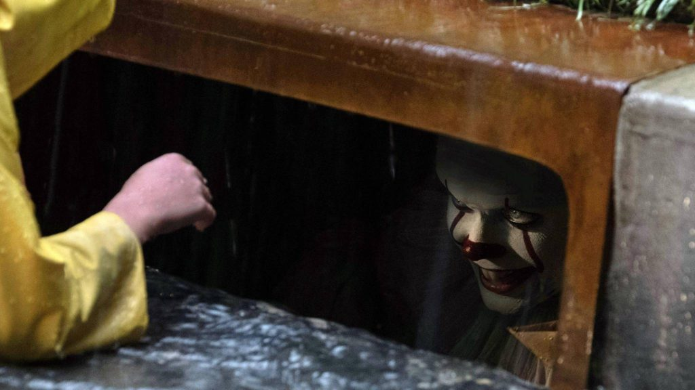

Filmes preferidos
Titanic
Meu primeiro amor
Uma linda mulher
Exterminador do Futuro I
De volta para o futuro I, II, III
Indiana Jones

Sexta-feira 13
A hora do pesadelo
![Na imagem há um garoto e uma garota, o garoto tem cabelo de tamanho médio de cor castanho claro puxado um pouco para escuro, jaqueta de couro de cor castanho claro, camisa cinza, calça jeans. A garota tem o cabelo de tamanho médio de cor castanho claro puxado um pouco para escuro, uma blusa de frio verde puxado um pouco pro escuro, uma camiseta vermelha com angola branca, calça jeans azul. O garoto está com um olhar apaixonado, apreciando o rosto da garota, seu dedo indicador da mão direita está tocando no queixo da garota. A garota está olhando para o garoto com um olhar de apaixonada, seu braço direto está em suas costa inclinando para o pescoço dele, sua mão está encostando no pescoço do garoto. Os dois aparenta estar sentados em um banco da rua.](./assets/Imagens/romance.jpg)
![Na imagem há dois homens, o primeiro está com um chapéu amarelo, camiseta social amarela e shorts com detalhes amarelos. Ele está segurando uma arma apontado para frente, o seu rosto faz uma expressão de estar dizendo 'fica parado ai, não se aproxime!!'. O segundo homem está com uma camiseta social verde claro puxado para um amarelo claro, usando calça jeans e seu cabelo é curto. Ele também está segurando uma arma apontando para frente, a expressão de seu rosto é de estar concentrado e sério. Os dois homens parecem estar em uma escritorio](./assets/Imagens/acao.jpg)